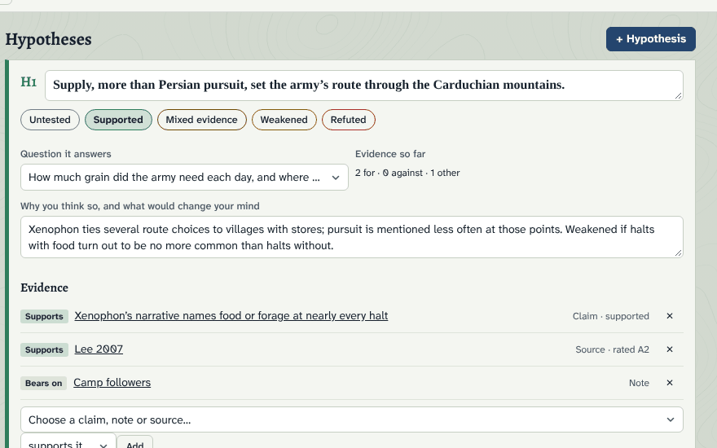
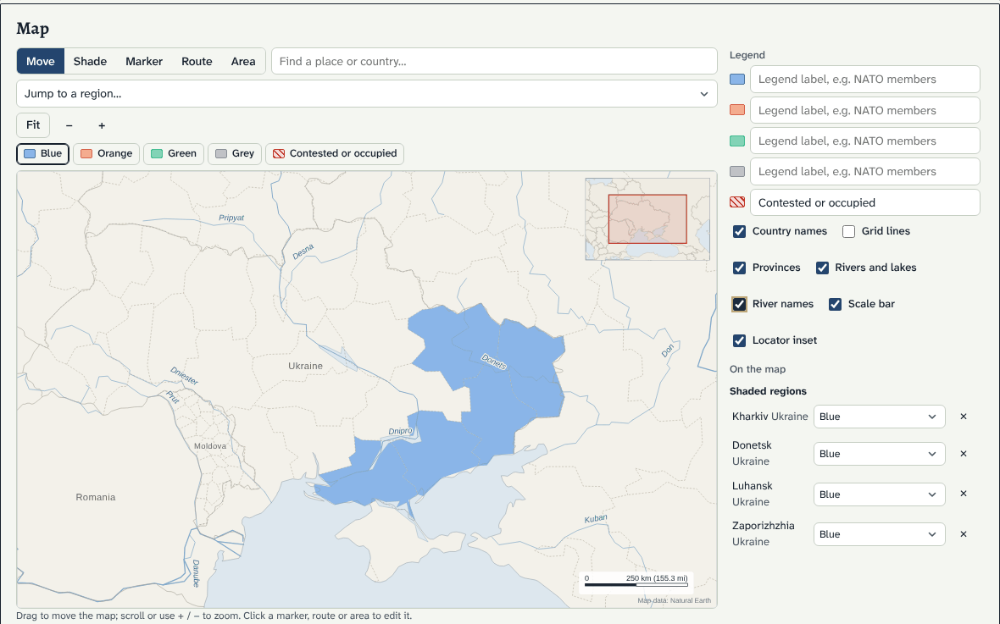
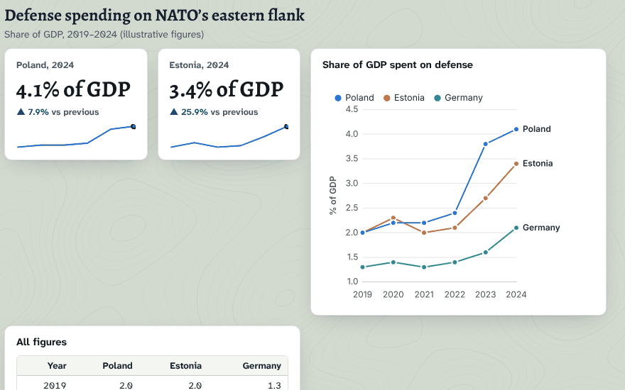

A writing desk for nonfiction.
Drafts, notes, sources and citations in one project, kept in one file that runs offline in your browser. Anabasis formats your citations as you write and checks the draft the way a careful editor would.
Version {{VERSION}}. Free and open source. No account, no server, no tracking. Works in Chrome, Edge, Firefox and Safari, on a computer, tablet or phone.

New in 2.0 Co-writing without a server. Send a co-author or editor a copy, then take their changes back as suggestions to accept or reject. Everything in 2.0
From the first source to the finished manuscript
The name comes from Xenophon’s march up-country. Writing from sources is a long march too, and Anabasis is laid out along it. Each stop has a tab, and the colours below are the colours of those tabs.
-
GatherSources tab
Add sources by DOI, ISBN or web address, or bring them in from Zotero, BibTeX and RIS. Read PDFs beside the draft and clip from the web.
-
NoteNotes tab
Quotes and ideas on a board you can pile, tag and drag into the draft. Interview transcripts become quote notes with timestamps.
-
DraftDocs tab
Citations in 55 styles, formatted as you type. Footnotes, figures, charts, maps and equations, and a binder that compiles chapters into a book.
-
CheckOutline and Research tabs
Paragraphs resting on one source, vague estimative language, undefined acronyms and house-style slips. Claims tracked against their evidence.
-
DeliverExport menu
Word, PDF, ePub, HTML, Markdown, LaTeX and Substack. Manuscript format for submissions and a line-numbered PDF for reviewers.
A closer look
Research tools that usually live in four separate apps, sharing one project.






Your work stays yours
A book can take years. The tool you write it in shouldn’t be able to take it from you.
On your computer
Your project is one file you save wherever you like, with a working copy in your browser so nothing is lost if a tab closes. Anabasis goes online only when you ask it to: to look up a source, back up to GitHub or check for an update. Privacy in detail
Readable for the long haul
The project file is plain, documented JSON, and version 2 of the format won’t break for as long as Anabasis is on 2.x. Everything exports to Markdown, Word, BibTeX and CSL-JSON. The file format
Open source
Free under the GNU Affero General Public License. Read the code, build it yourself, and check every download against its published checksum. Releases and checksums
This page follows the same rule. It loads nothing from anyone else: no analytics, no outside fonts and no cookies.
θάλαττα θάλαττα
Presently they could hear the soldiers shouting and passing on the joyful word, “The sea! the sea!”